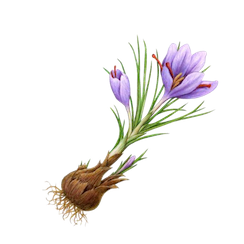
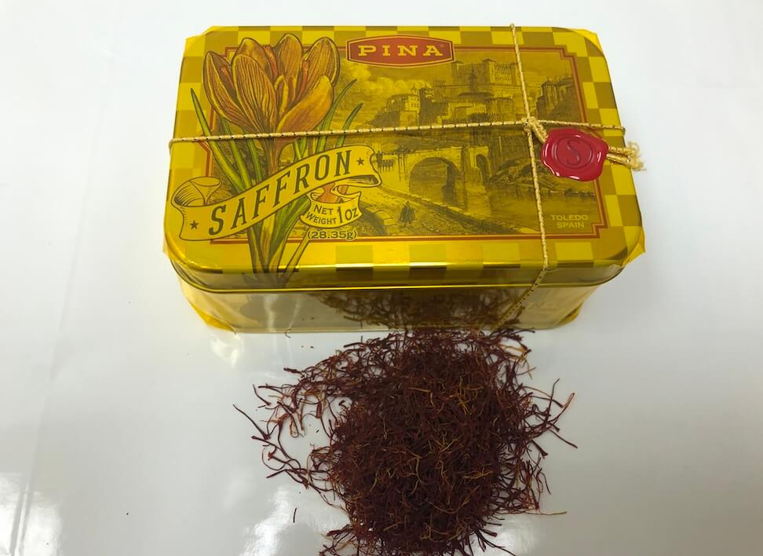
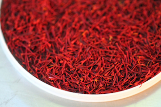

Bulk spice distributors, re-packers, industrial clients or bakeries looking for bulk spices, herbs & seeds are invited to call us any time to request current prices and specification sheets!
What is Saffron?
Saffron is the most precious and most expensive spice in the world. The Saffron filaments, or threads, are actually the dried stigmas of the saffron flower, Crocus Sativus Linneaus . Each flower contains only three stigmas. These threads must be picked from each flower by hand, and more than 75,000 of these flowers are needed to produce just one pound of Saffron filaments, making it the world's most precious spice. But, because of saffron's strong coloring power and intense flavor, it can be used sparingly. A little goes a long way.
Occidental International Foods, LLC
4 Middlebury Blvd., Suite 3
Aspen Business Park
Randolph, NJ 07869
Fax: 973-970-9222
E-mail: info@occidentalfoods.com

Product is available in our New Jersey warehouse. Please contact our Sales Department for product spec sheets and price quotes on an Ex-warehouse or Delivered basis. See Contact info below or on our Contact Page


Occidental
International
Foods, LLC

|
ISO Category
|
Crocine
|
Picocrocine
|
Safranal
|
Floral Waste
|
Extraneous Matter
|
|
I
|
> 190
|
> 70
|
20-50
|
1%
|
0.1%
|
|
II
|
> 150
|
> 55
|
20-50
|
4%
|
0.5%
|
|
III
|
> 110
|
> 40
|
20-50
|
7%
|
1.0%
|
|
IV
|
> 80
|
> 30
|
20-50
|
10%
|
1.0%
|
- Saffron is used both for its coloring power, and for its strong, intense flavor and aroma. It is used in Risotto Milanese and bouillabaisse, as well as a variety of Spanish rice dishes, including the very popular Paella. Scandinavians have long used saffron extensively in bread, rolls and cakes.
- History:
- Saffron has been used in cooking since the 10th century B.C. It was popular among the Phoenician traders, who carried it wherever they travelled. The ancient Assyrians used saffron for medicinal purposes. The Greeks and Romans used it to perfume their baths. The bright orange-yellow color it yields has made it important for use as a dye. Saffron is cultivated in many Mediterranean countries, as well as in the Middle East and the Near East. Most imported saffron today comes from Spain, and is packed in Spain, but the bulk saffron filaments are often imported to Spain from other Mediterranean & Persian origin growers.
- Quality & Grades:
- Saffron is available both in filaments and powder, though the long, deep red filaments are usually preferable to the powder as the latter can be easily adulterated. Buyers should be aware that even as filaments, saffron is often adulterated, and many brands widely sold in the foodservice market and distributed by large broadline distributors are very poor quality, and often adulterated.
- Saffron from Spain traditionally was broken down into four quality categories: Coupe, Mancha, Rio, & Sierra.
- "Coupe" quality would be 100% stigmata, with all stamens & styles removed by hand. This quality is extremely rare and is not commercial saffron sold in any significant quantities, and not distributed by larger volume importers. "Mancha" saffron is characterized by a deep red color and very few off color filaments (stamens & styles). Typically, less than 3% of filaments would be stamens or styles in a high quality “Mancha” grade saffron. This would roughly correlate to ISO 3632-2 Category 1 Quality parameters. This would be the best quality of commercial saffron readily available on the market in larger volumes. "Rio" and "Sierra" qualities have a higher percentage of stamens & styles, and thus weaker coloring & flavoring power. These grades would generally correlate to ISO 3632-2 Quality Categories II & III.
- Today the primary grades for commercially distributed saffron filaments are based on the International Standards Organisation (ISO) 3632.2 Quality Categories I, II, III & IV.
.jpg)
- Coloring power and purity are of primary importance when evaluating saffron quality. The strength of the coloring power will correlate with the percentage of true stigmata in the saffron filaments, because the stamens & styles do not contribute to the coloring power. Having said that, much of the saffron in the market today is adulterated, and will color water faster and darker than pure saffron, but the color will not be correct. Instead of turning your water a clear yellow, adulterated saffron will often turn the water a deep orange color or sometimes even orange-red (see below).
- The percentage of saffron filaments that are true stigmata (stigma) of the Saffron Crocus (Crocus Sativus L.) is the most important factor in the quality of saffron filaments. The higher the percentage of stigmata, the more potent the saffron will be. The better qualities of saffron will have only minimal amounts of floral waste, usually less than 3%, or will have close to none at all (floral waste includes any parts of the saffron crocus other than the stigmata), and will be free of extraneous matter.
- Saffron Adulteration in the USA market:
- Saffron filaments that are less than around 85% true stigmata of Crocus Sativus L. should be considered suspect quality, as this would not even be good enough quality to be considered ISO Category IV, the lowest of the ISO quality categories, and often could be adulterated.
- Many leading brands sold in the United States today by many of the largest broadline foodservice distributors in this market are actually much lower quality than ISO Category IV, and in fact, much of this saffron is adulterated and misbranded within the meaning of the US Food, Drug & Cosmetic Act. We have procured unopened 1 Ounce Nwt tins of Saffron from competitors labelled as “Pure Spanish Saffron” that are anything but pure. Some of these brands are blatantly adulterated, and can be proven as such with a simple water test. These are brands that are found among major foodservice distributors and in the kitchens of many restaurants today.
- In some cases, the samples of Saffron from competing brands we have opened have proven to be less than 40% stigmata! These samples have often turned water from yellow-orange to orange-red over 20+ minutes of immersion, which is a clear sign of adulteration. Pure Saffron will gradually turn your water a nice clear yellow color after a few minutes of immersion in room temperature water, and after about 20 minutes of immersion the water will become a stronger, deeper yellow color. Pure Saffron will not turn your water to an orange-red color!
- When evaluating the reaction of saffron threads immersed in water, it is important to study the threads after several minutes of immersion. Threads that change their color and/or form after a few minutes of immersion in water are not true saffron stigmata. In the major brand saffron samples we have tested, the majority of filaments changed color after just a few minutes of immersion in water. In some samples, there were also threads that became noticeably swollen within minutes of immersion, or otherwise changed form, often also sinking to the bottom of the glass. These are all signs of adulteration in saffron.
- True saffron stigmata will not exhibit any of those characteristics. True saffron stigmata will not change color after immersion in water; instead, true saffron stigmata will retain their deep burgundy-red color and will retain their long trumpet like shape. They will not swell or grow wings running along the side of the filaments. To the contrary, they will perfectly retain their shape and color even after 10-20 minutes of immersion in water.
- Occidental International Foods has made a commitment to carry only high quality, Pure Saffron. Our regular inventory is all ISO 3632-2 Category I quality. For particular long-standing clients who request it by special order, we have imported ISO Category II, but we will not carry Category III or IV qualities, and certainly nothing lower than that. Occidental Foods always strives to maintain Saffron purity with strict quality requirements enforced with our packers, and through actual-lot sampling.
- We have respectfully declined to do business with importers and distributors dealing in lower quality grades and especially those purveying adulterated saffron. With this decision to refrain from doing business in lower quality saffron that is so prevalent in the USA market, we have foregone larger volumes of business with large importers and distributors. To us, it is much more important to maintain high quality and our commitment to saffron purity.
- Storage:
- For best results, saffron should be stored in an ambient temperature and protected from high humidity and exposure to light. Ideal storage temperature range would be 50°-80°F and < 60% r/h. The product is normally good for at least 6 - 7 years from the date of packing if stored under ideal conditions.
- Packaging:
- We have many different packs available, including our decorated, cello-wrapped tins with 1 oz (28.35 grams) net weight, ideal for restaurant / foodservice use.
- Available Items:
- • Item 10110: Display box 12 x 1 g Nwt Cajitas
- • Item 10140: Cello-wrapped 1 Ounce decorated tin
- • Item 10144: Cello-wrapped bulk tin, 1 lb Net Wt (454 g)
- Organoleptic, Physical, Chemical & Microbiological Characteristics:
- • Appearance: Dried filaments with a deep burgundy-red color, with a small percentage of yellow or off-white stamens and styles (typically < 3%)
- • Aroma & flavor: Characteristic of saffron, very aromatic, somewhat bitter flavor when tasted directly
- • Size of filaments: 15 - 30 mm in length
- • Moisture: < 12.0 %
- • Ash Content: < 8.0 %
- • Acid Insoluble Ash: < 1.0 %
- • Extraneous Matter: < 0.5 %
- • Product is free of all pathogens
- Saffron QC Photos & Videos:
- Below are photos of a recent QC comparison we did between our own Saffron (on the right in each photo), and sample of a major brand carried by broadline foodservice distributors across the United States. The competing brand was clearly adulterated, even to an extreme degree, with the vast majority of filaments observed to be something other than saffron stigmata! This product was labelled as “Pure Spanish Saffron” which is clearly misbranded and a violation of the Food, Drug & Cosmetic Act. Nevertheless, major foodservice distributors continue to carry brands like these without a thought to quality or even to saffron purity.
- Also below are links to a couple of very interesting and useful videos by others in the industry who have observed saffron adulteration and who have thankfully taken the time to post videos online demonstrating their findings.
- Saffron Alert — Herbies Spices
- Fake vs Pure Saffron — Zaran Saffron
- Detection of Adulteration in Saffron Samples — Taylor & Francis Online
- SAFFRON - DISCERNING THE REAL FROM THE FAKE — Exotic BioNaturals